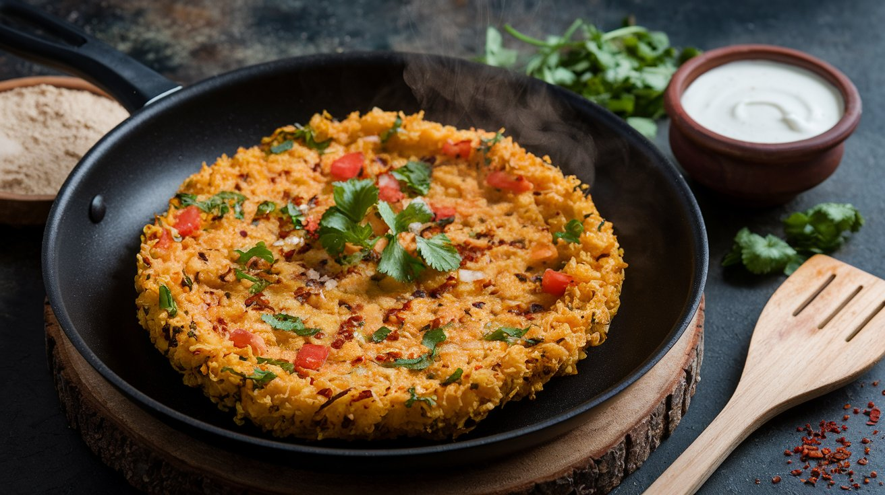

High-Protein Besan & Soya Chunks Chilla
A delicious and protein-packed breakfast/snack option.
Ingredients:
- 80g besan (gram flour)
- 60g soya chunks (boiled & ground)
- 1 onion (finely chopped)
- 1 tomato (finely chopped)
- Fresh coriander (chopped)
- 1 capsicum (optional, finely chopped)
- Water (as needed)
- Salt, turmeric, red chili powder (to taste)
- Oil or ghee (for cooking)
- 100-200g curd (for serving)
Instructions:
- Prepare the Batter: Boil soya chunks, grind coarsely, and mix with besan, vegetables, and spices. Add water gradually to get a smooth batter.
- Cook the Chilla: Heat a pan, pour batter, spread into a circular shape, and cook both sides for 2-3 mins until golden brown.
- Serve: Enjoy with curd for a high-protein meal!
Nutritional Breakdown (Per Serving):
| Nutrient | Amount |
|---|---|
| Calories | ~350 kcal |
| Protein | ~35g |
| Carbohydrates | ~40g |
| Fats | ~10g |
| Fiber | ~8g |
Why This Recipe is Great?
- ✔ High in protein – Great for muscle recovery.
- ✔ Rich in fiber – Keeps you full longer.
- ✔ Low in fat – A healthy meal option.
- ✔ Quick & Easy – Ready in 15-20 minutes!